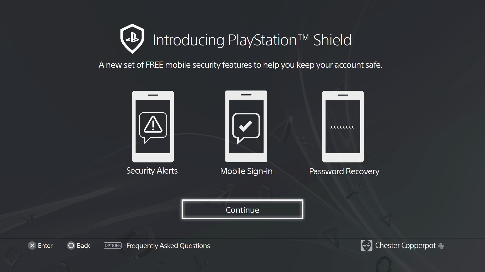
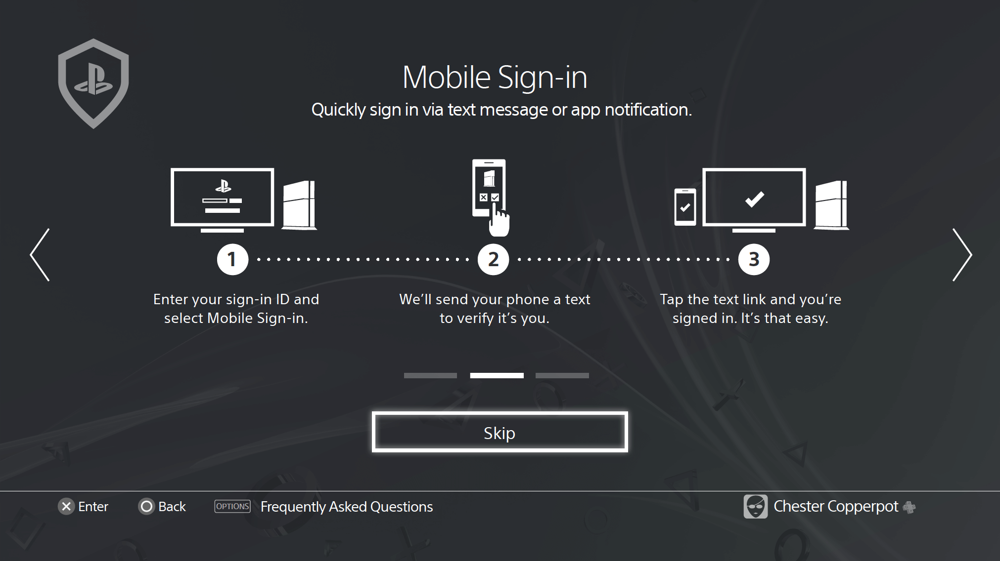
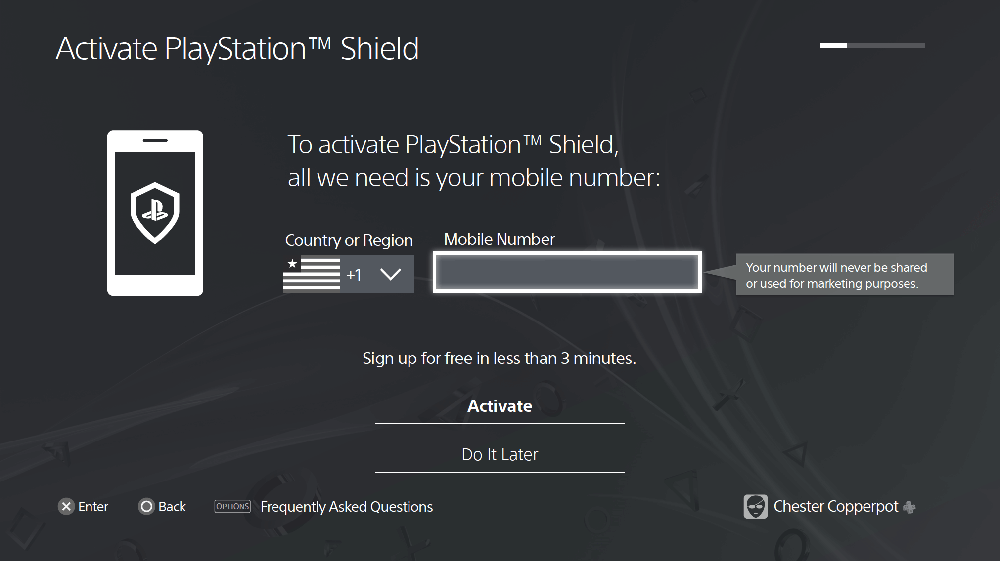
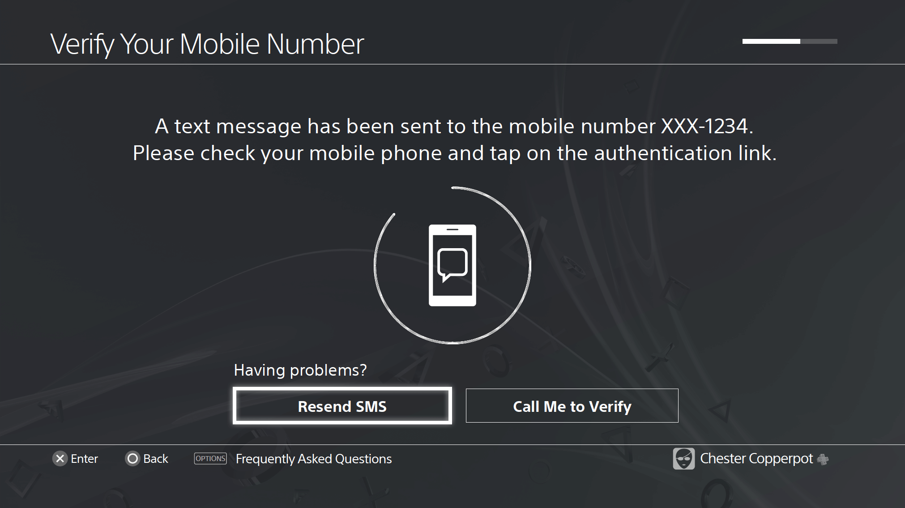
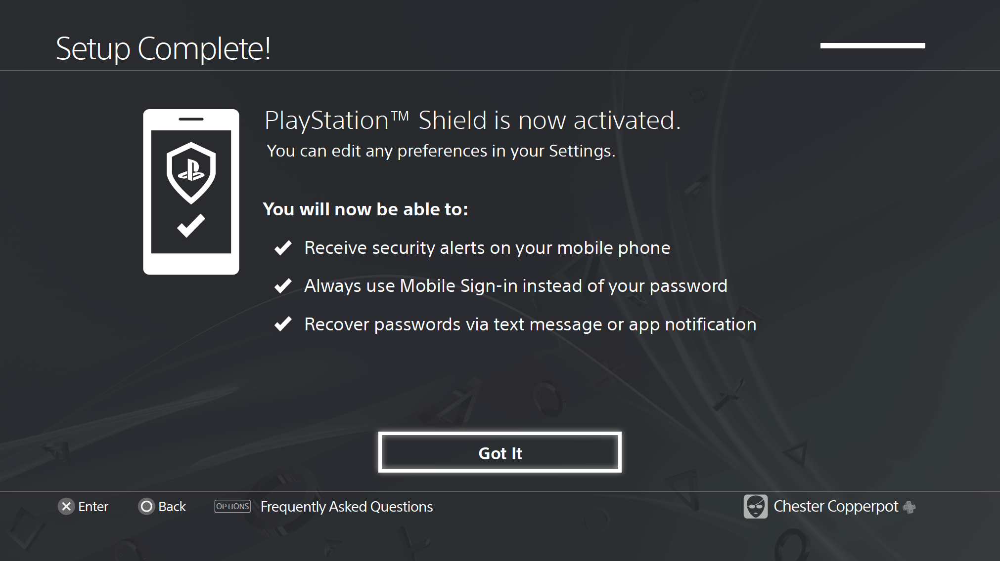
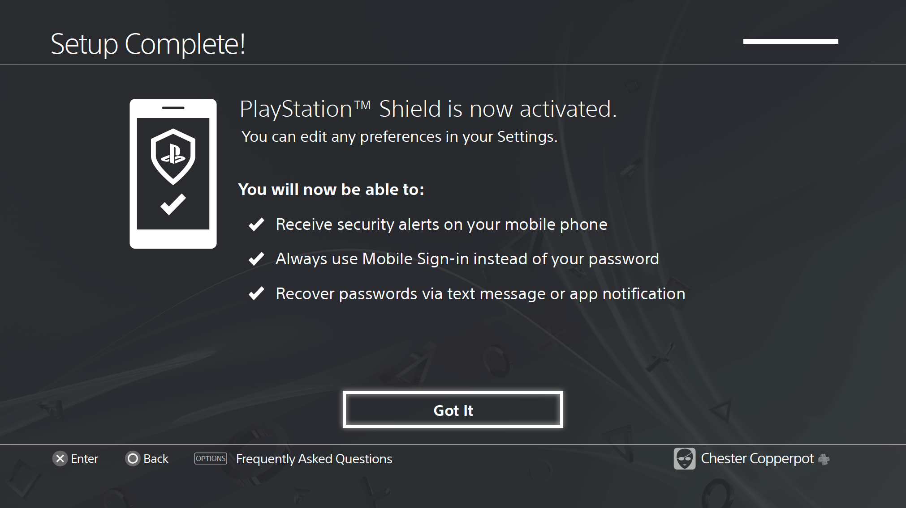
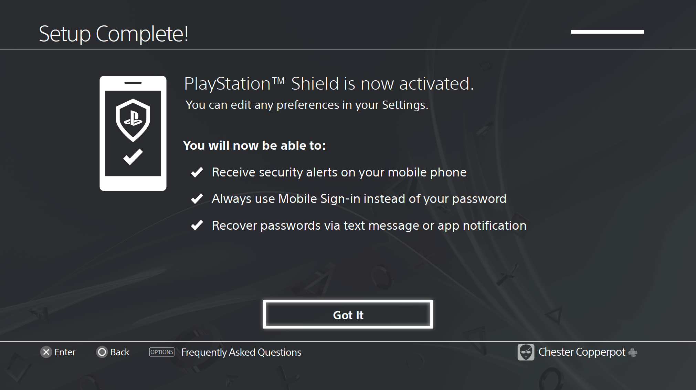
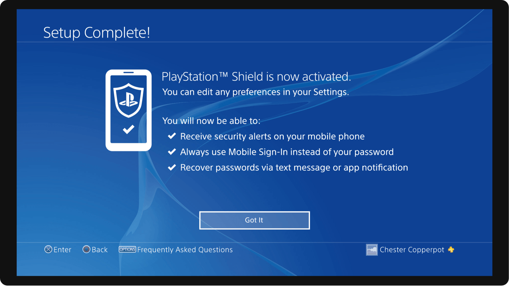
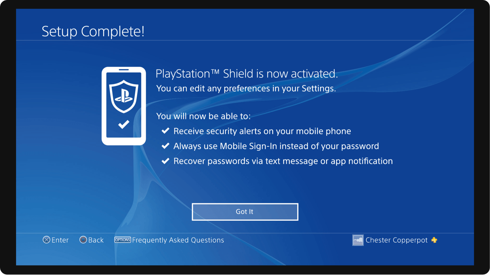

Wireframes
    

In 2015 PlayStation and Xbox gamers were at risk of having their private information stolen—including email addresses, passwords and IP addresses—following a data breach of two popular gaming forums that affected 2.5 million accounts.
In an effort to explore new cyber security measures Sony implemented a two-factor authentication system as an additional layer of security for PlayStation users. The process consists of a code being sent to the user’s chosen mobile device which can then be used in tandem with their username and password to log them into their account more securely.

The main challenge of this project was finding a way to simultaneously educate gamers about the addition of 2FA while not impeding on their gaming/shopping experience, and staying within the constrains of Sony’s current console UI and brand color palette.
As a Sr UI Designer, I worked closely with the UX designer to create a digestible narrative that explained the importance of 2FA while walking the user through the setup process. Brevity was key when designing motion for a user whose driving motivation is gaming. The story had to be both entertaining and concise, educating but staying out of the way.

 

Thanks for taking the time to read about this project!
You can see more of my work at jordanbryant.design 🙌